Noise In Scope
Visualizing Noise Pollution in Midtown Atlanta

Topic of Inquiry
The goal of this project was to create visualizations of a “data walk” by making inquiries about a local place. The purpose of a data walk is to examine social issues thorugh on the ground observations and embodied exerperiences. Using spatial data, we examine social structures through the concept of relational and dynamic boundaries. This project sets out to investigate noise pollution in central and peripheral midtown Atlanta.
Guiding Questions
- How do our bodies react to noise pollution?
- How might people become resigned to it?
- In what ways is it gradient and where does it change suddenly ?
- How does noise vary over the course of the day?
- How do people experience noise differently (transport, home, length of time)?
- What social and infrastructural issues is noise associated with?
- Which noise-scapes are necessary / alarming / inflicted upon each other?
- What sound layers (desired and undesired) make up the sound of a living city?
Background Research
Next to air pollution, noise pollution is the next highest rate of pollution. Its effects range from loss of hearing, impacts on sleep and mental health, increased risk for heart disease, and a dilution of cultural sound-scape. Although it permeates and affects everyone living in an area, noise is yet another ground on which social boundaries develop. Research shows associations between noise pollution and lower socioecomic status (Huang et al., 2021). Those working in blue-collar jobs (e.g. construction, factory farm floor) might be bombarded, and thus resigned to, noise at work. In addition to that, the home might not provide any respite as certain communities face more noise pollution being located in less-ideal areas such as next to airports and train centers.
Data Walks
For my data “walks”, I went on several bike rides over three weekends. I did not have a visualization method in mind but I kept the inquiring questions in mind as I made my way through different spots of Atlanta. To document the process and to collect material for visualizations, I stopped at dozens of places to take photos and video recordings of each environment.
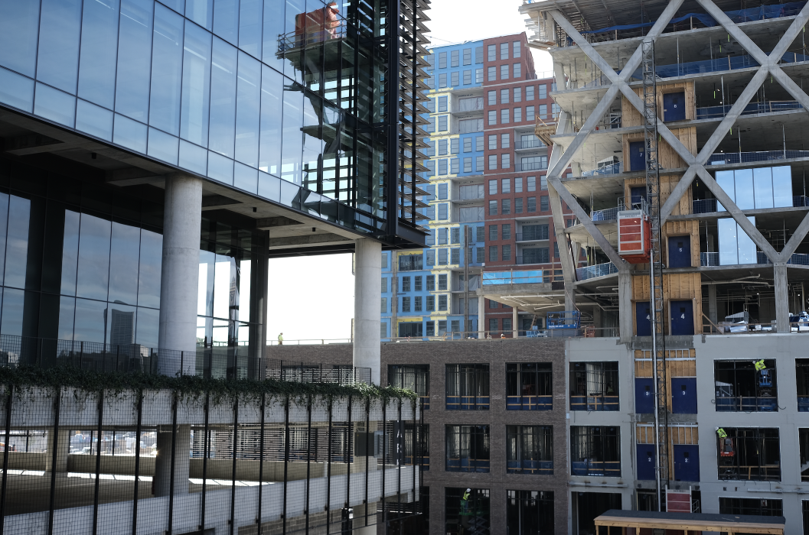The extracted sound files were then passed through audio software to analyze various qualities like pitch, loudness, and variation. Here is the recording and its waveform taken from one of the locations
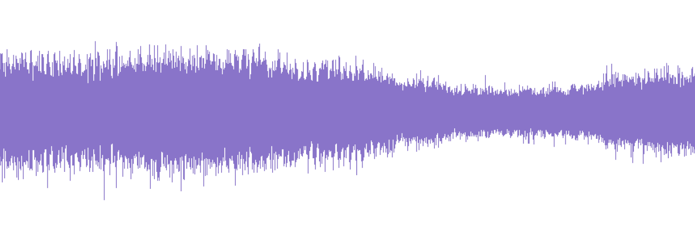Sound can also be represented as a spectogram, which is an x-y plot of time vs. pitch.
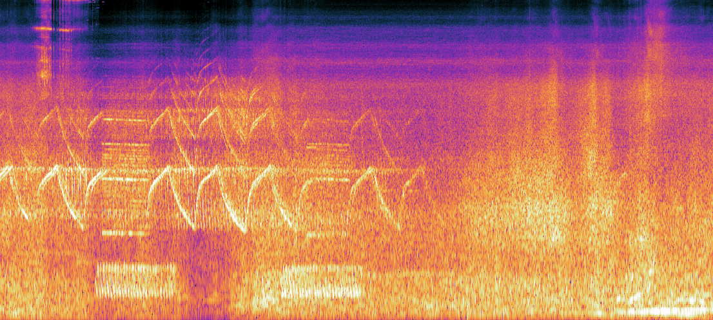Representing the Data: Iteration 1
My intended object was to “visualize” noise, not through a diagram of numbers, but to create pieces that express the embodied experience of noise pollution. In the first draft, I used the photo taken at one of the sites and distorted it based on the amplitude and wavelengths in the sound file. The spectogram was used as an overlay layer to include objective (but abstracted) information and to add mood.
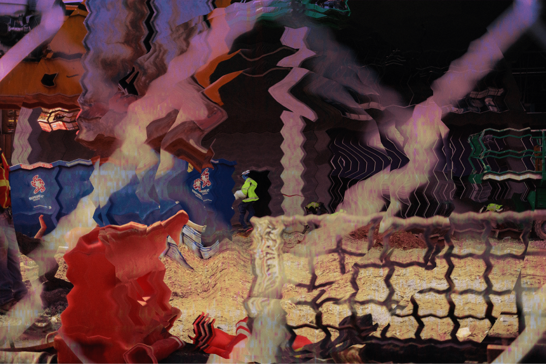Representing the Data: Iteration 2
Reflecting on the draft, I felt that it did not tell a clear message. It lacked the capacity to portray a sense time or movement that is present in sound. In the next iteration, the goal was to introduce the sense of change and temporality. In order to ideate more ways of representation, I found it helpful to ask more questions:
- How does noise pollution relate to other types of pollution?
- What’s the texture of noise?
- What is its shape of sound?
- How does sound physically work?
- What actions are associated with sound?
Part 1: Building
The answer came when I accidentally stumbled onto a cheap cardboard kaleidoscope made with colorful beads. When a light shines through it, the inner reflective surface bounces the light over and over to creates symmetrical patterns. And it struck me that a mirror a visual equivalent to the echoing of sound waves. So I was off to make some mirrors...
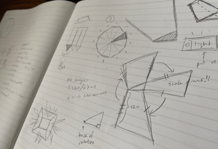 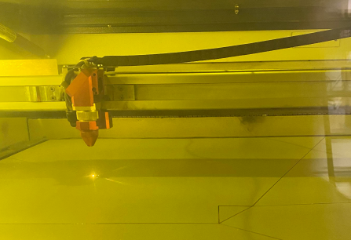 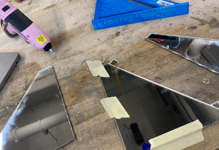
After experimenting with foil and different types of kaleiscopes, I settled on one that shows a 3D dodecahedron of whatever bright picture that is placed on the end of the cone.
Part 2: Visualizing
The second iteration of visualizations were all created with the kaleidoscope medium in mind. Based on the spectograms, I created abstract paintings and manipulated the color profiles on each resulting image to reflect my own embodied reaction to each place. While creating the pieces, I listened to loops of the sounds of each environment I was recreating. The lines were drawn while feeling my own heartbeat to imbue abstracted biodata into the character of their movement. The lines are both meant to represent topographic maps as well as perform the mood (stress, calm) and type of sounds (machines, wind, people talking).
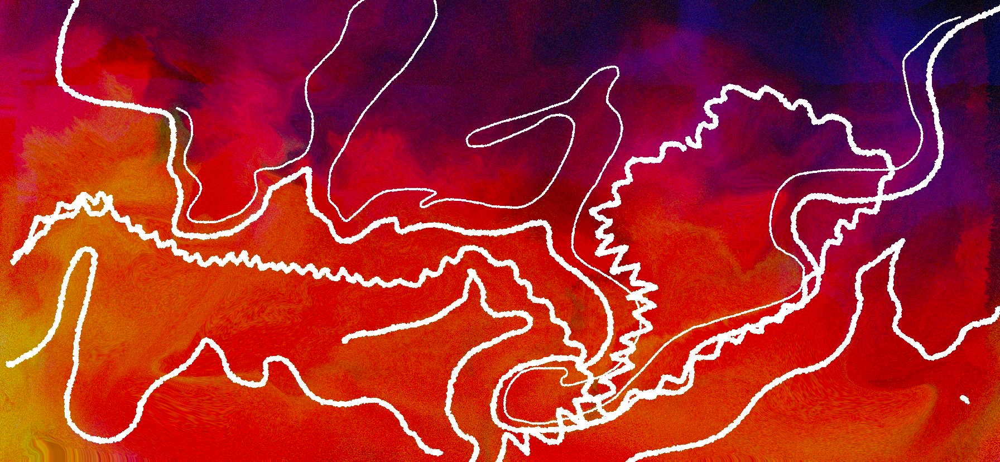 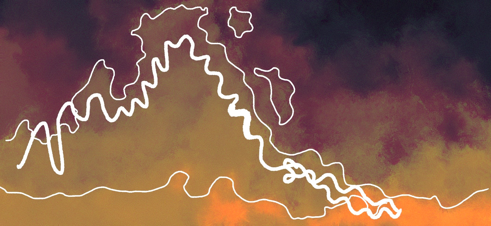 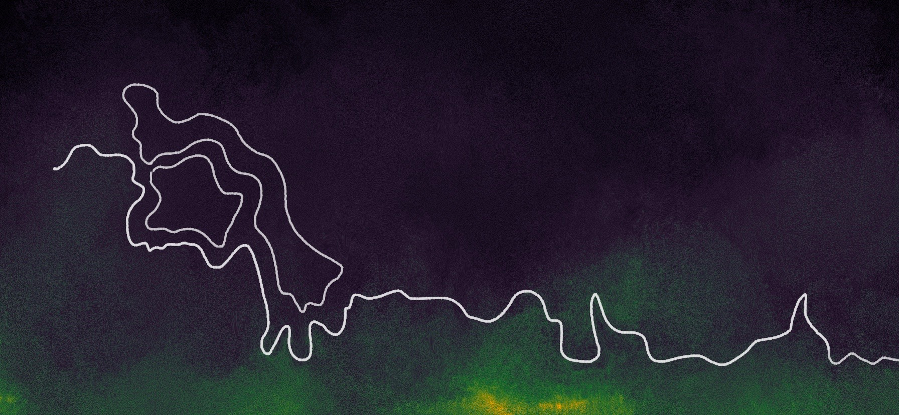 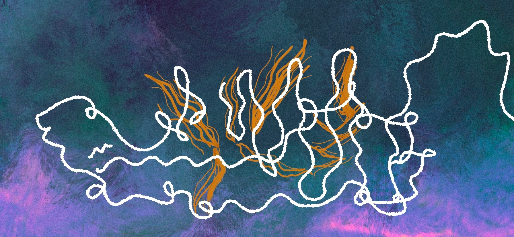Final Product
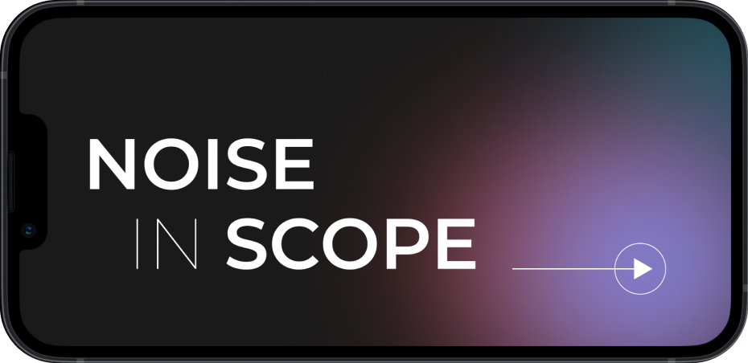I wanted the visualizations to be a part of a more whole interactive experience - one in which the audience has agency in how they interact with the visual pieces and their respective soundscapes. This is to depict real world conditions of how sound moves as we move in our environment and how certain populations have choices in the duration of soundscapes.
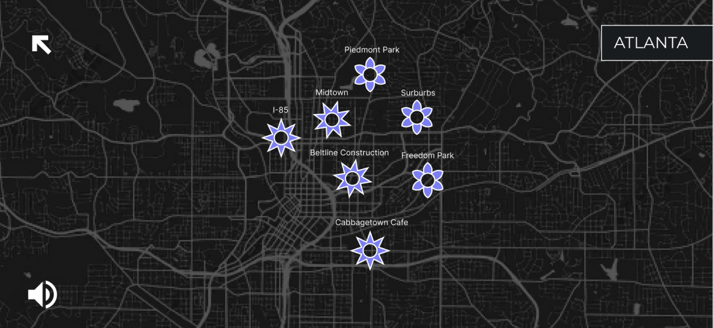In the app is a map of Atlanta and the places that I frequent by bike. Each location is depicted by an icon that hints at the sound qualities - spikes for a harsh soundscape / soft petals for a tranquil soundscape. Each leads to the respective visualizations that can be viewed through the 3D kaleiscope.
Next Project